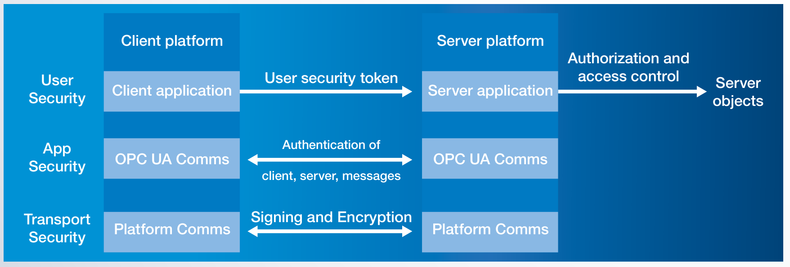

Security
Security คือเหตุผลสำคัญที่ Industry 4.0 เลือก OPC UA — ออกแบบมาให้ "Secure by Default" ไม่ใช่ add-on ทีหลัง — ผ่านการตรวจสอบโดย German Federal Office for Information Security (BSI) ในระดับสากล
ทำไม Security สำคัญในระบบอุตสาหกรรม?
ในยุค Modbus + RS-485 ปี 1990 — โรงงานเป็น "เกาะ" แยกจาก IT Network ใครจะ Hack ก็ต้องเข้าโรงงานด้วยตนเอง — Security จึงไม่สำคัญในระดับ Protocol
ในยุค Industrie 4.0 + Cloud — ทุกเครื่องเชื่อมต่อ Internet → ความเสี่ยงเพิ่มขึ้นมหาศาล:
- Stuxnet (2010) — Malware ที่ Sabotage โรงงาน Centrifuge นิวเคลียร์ผ่าน PLC
- Colonial Pipeline (2021) — Ransomware ที่ทำให้ท่อน้ำมัน East Coast US หยุดทำงาน 5 วัน
- JBS Foods (2021) — โรงงานเนื้อใหญ่ที่สุดของโลกหยุดผลิตเพราะ Cyber Attack
โรงงานสมัยใหม่ ต้อง มีระบบ Security ตั้งแต่ Protocol ขึ้นไป — และเป็นเรื่องของ Engineer Mechatronics ไม่ใช่แค่ฝ่าย IT
OPC UA Security Model — 3 Layers
Security ของ OPC UA แยกเป็น 3 ชั้น — แต่ละชั้นมีหน้าที่ต่างกัน เปิด/ปิด แต่ละชั้นได้อิสระ:

1️⃣ Transport Security — ระดับช่องสื่อสาร
จุดประสงค์: ป้องกันข้อมูล ระหว่างทาง — ใครดักอ่านระหว่าง Client กับ Server ไม่ได้
- ใช้มาตรฐาน TLS-like (เหมือน HTTPS) — Sign + Encrypt ทุก Message
- SecurityMode เลือกได้ 3 ระดับ:
None— ไม่มีอะไรเลย (ใช้แค่ใน Lab ภายใน)Sign— เซ็นชื่อ Message (ป้องกัน Tampering แต่ยังอ่านได้)SignAndEncrypt— เซ็นชื่อ + เข้ารหัส (มาตรฐานในงาน Production)
- SecurityPolicy เลือก Algorithm: RSA + AES + SHA-256 / SHA-384
2️⃣ Application Security — ระดับแอป
จุดประสงค์: Client และ Server ตรวจสอบ ตัวตน ของกันและกัน — ป้องกัน "Rogue Device" ปลอมเป็น Server
- ใช้ X.509 v3 Certificates (เหมือนกับ Certificate ของ HTTPS Website)
- Certificate มี:
- Subject — ตัวตนของ App (เช่น "PLC-Line-A-01")
- Public Key — สำหรับเข้ารหัส
- Issuer — ใครเป็นคนเซ็นรับรอง (CA)
- Validity — ช่วงเวลาที่ใช้ได้
- Client/Server ต้องใส่ Certificate ของกันและกันใน Trust List
3️⃣ User Security — ระดับคน
จุดประสงค์: ตรวจสอบว่า ใคร เป็นคนใช้งาน — Authorize ตามบทบาท
OPC UA รองรับการ Authenticate User 4 แบบ:
| วิธี | เหมาะกับ |
|---|---|
Anonymous |
Public Data ที่ใครเข้าได้ (เช่น Status Page) |
UserName + Password |
Operator/Engineer ที่ใช้งาน HMI |
X.509 Certificate |
Service Account / Machine-to-Machine |
IssuedToken (Bearer/OAuth2) |
SSO / Enterprise IdP — Azure AD, Okta, Keycloak |
Role-based Authorization (Part 18) — แต่ละ User มี Role เช่น "Operator", "Engineer", "Maintenance" แต่ละ Role มีสิทธิ์ที่ระดับ Node ของแต่ละ Variable/Method
SecureChannel + Session — ขั้นตอนตอนต่อ
ลำดับเหตุการณ์ตอน Client เปิดเข้าหา Server:
-
Find Endpoint
— Client เรียก
GetEndpointsไปที่ Server เพื่อดูว่ามี SecurityPolicy อะไรให้เลือก - OpenSecureChannel — แลก Public Keys + กำหนด Symmetric Key สำหรับ Session — เข้ารหัส Message ทั้งหมดที่ตามมา
- CreateSession — Client ส่ง User Token (Username/Password/Certificate)
- ActivateSession — Server Validate User Token แล้ว Authorize ตาม Role
- Read / Write / Browse / … — เริ่มใช้งานปกติ ทุก Message ผ่าน Encryption
- CloseSession + CloseSecureChannel — ปิดเมื่อเสร็จ
ทั้งหมดนี้ทำโดย Library อัตโนมัติ — Application Developer ไม่ต้องจัดการ Crypto เอง
ตัวอย่าง — ตอนต่อ OPC UA Server ด้วย Python
from asyncua import Client
from asyncua.crypto.security_policies import SecurityPolicyBasic256Sha256
from asyncua.ua import MessageSecurityMode
async with Client('opc.tcp://plant-floor:4840') as client:
# 1) Application Security — ใช้ Certificate ของเราเอง + Trust ของ Server
await client.set_security(
SecurityPolicyBasic256Sha256,
certificate_path='client-cert.pem',
private_key_path='client-key.pem',
server_certificate_path='server-cert.pem',
mode=MessageSecurityMode.SignAndEncrypt
)
# 2) User Security — ใส่ Username/Password
client.set_user('operator-a')
client.set_password('s3cur3-p4ss')
# 3) Transport + Encryption ทำให้อัตโนมัติ — เริ่มใช้งานปกติ
await client.connect()
value = await client.get_node('ns=2;s=Temp1').read_value()Global Discovery Server (GDS)
ในโรงงานใหญ่ที่มี Server เป็นร้อยตัว — การจัดการ Certificate ทุกตัวด้วยมือเป็นเรื่องโหด OPC UA จึงมีระบบ GDS:
- Server และ Client ทุกตัวลงทะเบียนกับ GDS
- GDS เป็น Certificate Authority (CA) เซ็นรับรอง Certificate ของทุก Application
- Update Trust List + Revocation List อัตโนมัติ — ถ้ามี Device ถูก Revoke ก็แจ้งทุกตัวพร้อมกัน
- Auto-renewal Certificate ก่อนหมดอายุ
เป็น Infrastructure ที่ทำให้ Security ทำงานได้ในสเกลใหญ่
BSI Security Analysis — ตรวจสอบโดยผู้เชี่ยวชาญ
นี่คือคำแนะนำให้ใช้ OPC UA ใน Critical Infrastructure ของเยอรมนี
เทียบกับ Modbus
| ประเด็น | Modbus | OPC UA |
|---|---|---|
| Encryption ระหว่างทาง | ❌ Plain Text | ✅ AES-256 |
| Authentication App | ❌ ไม่มี | ✅ X.509 Certificates |
| Authentication User | ❌ ไม่มี | ✅ User/Pass, Cert, Token |
| Authorization (Role) | ❌ ไม่มี | ✅ Role-based ที่ระดับ Node |
| Integrity (กัน Tamper) | มี CRC แต่ป้องกัน Active attack ไม่ได้ | ✅ SHA-256 Signing |
| Audit Trail | ❌ ไม่มี | ✅ Session events บันทึกได้ |
| Certificate Management | — | ✅ GDS + Auto-renewal |
| Replay Attack Protection | ❌ | ✅ Nonces + Timestamps |
Best Practices สำหรับโรงงาน
- ใช้ SignAndEncrypt เสมอใน Production — None และ Sign ใช้ใน Lab เท่านั้น
- หมุน Certificate ก่อนหมดอายุ — GDS ช่วยได้ ทำได้อัตโนมัติ
- กำหนด Trust List ที่ Server — รับเฉพาะ Client ที่รู้จัก ไม่ใช่ Trust ทุกคน
- ใช้ User Authentication ที่เหมาะสม — User/Pass สำหรับคน, Certificate สำหรับเครื่อง
- Audit Log ทุก Session — ใครเข้ามาเมื่อไหร่ ทำอะไรบ้าง
- ปิด Anonymous endpoint บน Production — เปิดเฉพาะที่จำเป็น
- Update SecurityPolicy ทุกๆ ปี — เปลี่ยนตามคำแนะนำของ OPC Foundation Security Advisories
สรุปบทที่ 06
- OPC UA Security เป็น Built-in by Design — ไม่ใช่ Add-on
- 3 Layers — Transport, Application, User ทำงานคู่กัน เปิด/ปิด ได้อิสระ
- ใช้มาตรฐาน IT ที่พิสูจน์แล้ว — X.509 Certificates, TLS-like, RSA + AES + SHA-256
- มี Global Discovery Server (GDS) สำหรับจัดการ Certificate ในสเกลใหญ่
- BSI (เยอรมัน) ตรวจแล้วว่าไม่มีช่องโหว่ในเชิงระบบ — ใช้กับ Critical Infrastructure ได้
- การที่ Cloud Provider (Azure, AWS) เลือก OPC UA over MQTT — ส่วนหนึ่งเพราะ Security Layer นี้
เสร็จส่วน "แนวคิดหลัก" แล้ว — บทต่อไปจะเข้าสู่ ระบบนิเวศ เริ่มจาก Companion Specifications ที่ทำให้ Robot, Machine Tools, IO-Link พูดภาษาเดียวกันได้